Archives : 2009-04
有这么帅的猪八戒吗？ @ Apr 30, 2009
到家的时候《直播南京》播了一半，一般会在下班路上听93.7转播的《直播南京》，到家或者先做饭或者先遛狗，今天先躺沙发看新闻了，广告来了就换别的台，电视上的广告真TM的多，电视台也有强迫症了。看着看着毫无知觉的睡着，然后在电视里的争吵声中醒来，抖擞精神关上电视，带luke外出散步。
这两天luke又开始张着大嘴呼啦呼啦的喘气，就差滴下几滴欲望的口水，在家里来回转悠。不晓得哪家母狗发情，使得它迎着早晨吹进屋内的风急促地耸动鼻子捕捉着什么...那种火热的渴望显得很可怜，然而任何主人都会是无奈。今晚特地带它多转转，包括小区从未踏足的地方，发现还有更喜欢的园林设计，更增加了对这个园子的喜爱。遇到一只雪纳瑞，天下爱宠物的人是一家，毫不介外的聊天，对方是对五十多岁的老夫妻，话语轻柔。
老先生：“这是什么狗啊？”
每每有人问同样的问题，我心里既纳闷又暗喜。
纳闷的是连这个狗都不认识，暗喜咱luke物以稀为贵。
老先生又说：“两只大耳朵真好玩，象猪八戒.....”
我就差四脚朝天倒地上，心里忿忿不平：哼，有这么帅的猪八戒吗？
****************************************************
桑格格为问问写了篇童话，咱不是吃写字的饭，但咱有鉴赏能力，要推荐部电影给问问，这部电影是晚上刚刚看完的，叫《Bedtime Stories》，看得好开心，大人小孩通吃的童话故事，讲一个不负责任的衰男在哄孩子入睡时，漫不经心地把诸多经典故事“改编”得乱七八糟，没想到故事里的人物竟神奇地光临现实了……和问问的气场应该相投，一定要看哦！喜欢里面那只叫“小疯子”豚鼠，那眼睛比赵薇的还大，能看得你灵魂出窍。（怀疑问问这样中文专业的人会不会看我这又臭又长的裹脚布？所以推荐电影的同时也试探一下她是否真会看我写了什么，坏笑ing）**点击下载观看**
Dress Blog @ Apr 30, 2009
节前最后一天工作。天气干燥地冒出火气疙瘩了。
纽约的朋友在线上说：“你这样打扮在纽约不算土鳖，是不错的，但不属于有个性的。”
个性这个东西我也爱，如果工作环境允许，每个人都有充分发挥的自由空间。记得以前虎子少年时曾经想穿耳洞，他父母说：“如果你以后职业允许，当然可以，可是现在不行。”
第一张的上衣颜色比较准确，偏暖的柔和的橘红色；
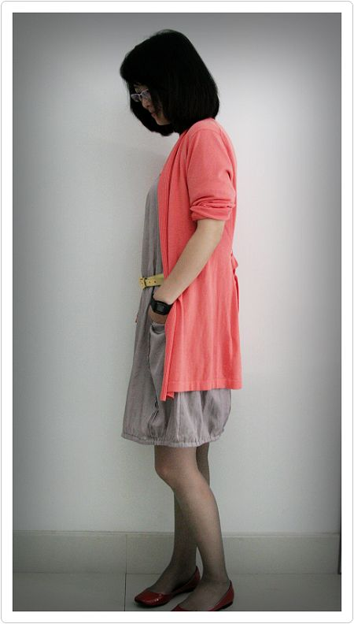
以前特别不能接受金色的或者镶钻的腰带，也许莱迪、华欣地下商城卖的泛滥，总给人廉价品质低劣的印象。可是今年我也买了一条金色腰带，因为好喜欢它的做工。


偏暗的橘红色鞋，靠近鞋尖的底部各有三颗并列的小小的铜铆钉。

17：37终于完成手上的工作，眼也花腿也酸了，这时候姐姐打电话来说高架上堵车....节日还没开始就塞车啦？假期没任何外出的打算，准备在这个城市里消磨时光，仔细想想又没有什么特别的活动可安排，还是宅在家里休息看电影读小说，一天用来看望父母。假期的时间总是不经用滴~
这些隐藏着的精彩 @ Apr 29, 2009
我常常说些不讨喜的话（可都是真实的话），开始接触的人如果不了解一定耿耿于怀，不过总有冰雪消融的时候。今天我又要说不讨喜的话了，本着我对南京的印象怎么也没想到会发现这样一个地道的南京女孩子，有点象我的好朋友娱儿的性格，平淡中的精彩，在她的blog中丝毫没有世俗与玩味，她甚至不懂得如何赤膊上阵炒作自己，安静的如墙角一朵悄悄绽放的花朵，芬芳沁人。最近她与另三个人出的新书《1/4的梦想》已经面市，算起插画作者，足足八人（作者四人+插图作者四人）。不管是否如comment里有人写的那样“偏向于少女读者，讨幼男读者欢心......”都要支持这位“问问”哦！
有个叫桑格格的blogger给“问问”写了篇童话《小红脸和小蓝脸》，其实她们根本不认识，仅仅凭着对问问的喜欢与欣赏，让我这旁观者看了都感动。在此之前我认为童话都是写给小孩子看的，可是她俩写的童话大人小孩通吃，写的那么轻柔，好象是鹅毛在挠抓你身体的痒痒，一点不矫情，我现在也爱看呢：咸菜人等
还发现了这个摄影无比干净有趣的个人blog，那些画面里透露出的情绪和故事小小打动了我，在我看来那不是把玩相机与画面，不是矫柔造作的摆弄，而是用心表达生活，他关注的范围很大，缤纷多彩到走出家门的一草一木一字：
**小确幸
以下这些blog是我经常从茶的反向连接里看到的网址，他们常常来看我，其实我也常常去看他们，这世界如此之大，精彩的写手如此之多，仍然能得到他们的关注，更加深了我对他们的感动与感谢，冥冥中似曾相识之感。也许...渐渐地...我们关注的不是对方文字组合有多玩味，摄影多么有技巧，界面如何精致，我们关注的就是对方这个人：
**The Best of ME ~ Blooming Violet
**I am still here
**做自己的汉武帝
**葱丁
**一路走来～
**anxing1977
**虹蝶碧苓
**shanshu
**候鸟生活
**簡單生活
**梧竹幽居
反向连接里常发现一些经过搜索有关tea连接到中国茶的精彩网址，比如这家台湾经营下午茶的店铺，无比精美的相片和好听的背景音乐：
**Afternoon Tea House
Dress Blog @ Apr 29, 2009
前天晚上看了部既酷又血腥的DVD《The Punisher》，残酷的镜头让我在沙发上一惊一咋，整部电影用网络评语概括：“如果有罪，去死吧！”人生也这么简单就好了，省得自己和自己对话，还要和不同的人对话。
我一直在乞问上帝，究竟我做的是对还是错？
我一直在等待答案，就是：罪者当罚！
--惩罚者
感谢姐姐送的墨绿色长统袜，不然衬托不出这身绿花花裙子的好看。

丝棉质地带里衬的连衣裙，看着凉爽，却符合最近不冷也不热的天气穿。只是领口毫无安全感的大，必须加穿背心。搭配内衣是件头痛的事，质地最好能与外面衣服相似才不显得突兀。

与它相伴三四年，使用率极低。

小胖&芒果 @ Apr 28, 2009
这眼神貌似网络小胖。很不幸，在它头顶的皮下长了一个脂肪瘤，怎么动怎么摸它都没反应，去宠物医院看过，那里的人说只要不继续长大不影响生活最好不要开刀。我也这么想的，在国内带宠物去宠物医院看病也象买彩票....有一次遇到一位阿姨，那阿姨好奇的说这只小狗戴着顶帽子啊~我差点没晕过去。
这只被人喊“小巴狗”、“小黄狗”的戴着帽子的小胖从不挑人，对人非常友好，但是挑同类。比如它最喜欢的是白熊小姐（白色萨摩耶），对其它同类一概没兴趣。别的狗狗和它吵架，它也没任何反应的从人家身边飘过...但是，任何雄性同类都不能趴在它背上，那时它就不是小胖的眼神了。

这是一只爱吃面食会唱歌的帅小胖，只要大声持续的对着它唱歌，不一会儿它就会跟着鬼哭狼嚎起来，请注意不是汪汪汪哦，而是眯起眼睛把嘴撅起来发出持续的声调，虽然没什么音阶旋律，但我认为那就是它美妙的歌声。
没有不好的狗狗，只有不懂狗的人类。因为它太乖，应该这么说它是一条成熟而独立的成年犬。有时间我会尽量带它外出，希望它的性格能活跃一些。

它满脸忧郁地坐着...在等待好吃的。
喜欢扯它嘴上的皮，又柔软又松弛。

排排坐，吃果果：）

俗话说：浓缩的就是精华。可是大芒果的确比小芒果甜蜜啊~
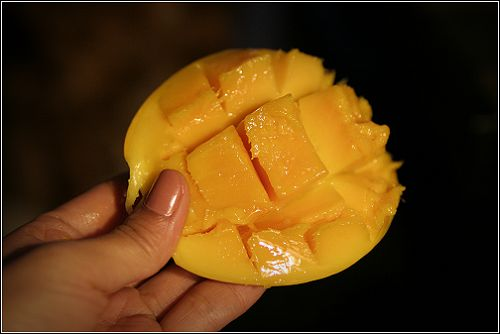
Dress Blog @ Apr 28, 2009
剪短发后戴眼镜好象不适合了：（
上衣的颜色其实是第二张那个样子。

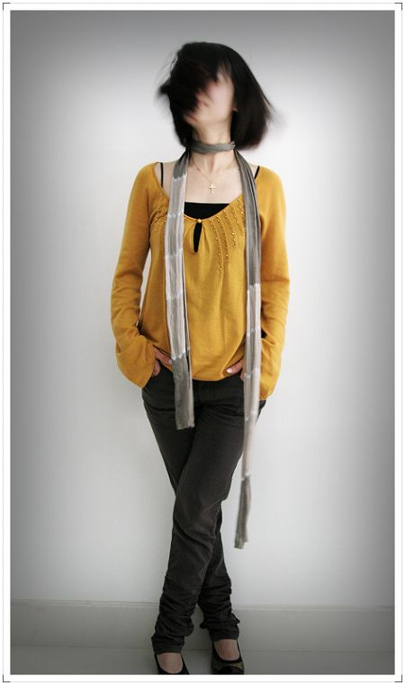
一年前买的这双鞋商场现在打折到300多元咯~

展示一下别致的裤脚。
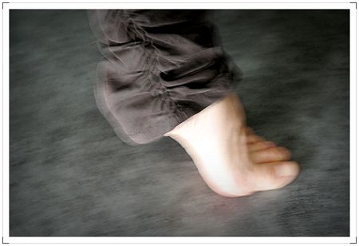
编辑这篇BLOG时，听见新闻里说某历史老师不仅用钢筋抽打学生，还把该学生从四楼扔下去....吓死我喽！这两天广播新闻上重复播放习水县嫖宿幼女案，嫖客里居然还有5个政府官员（这一点也不奇怪）。即使案发后记者到习水县暗访，联系上一个包工头，该男子仍然找来三个满脸稚气的学生妹，最大的17岁，最小的才11岁......谁让咱喜欢看新闻听新闻呢？这算不算八卦浅质？
我爱美食 @ Apr 27, 2009
晚饭烧了三个菜：青椒炒鸡蛋、油闷茄子和豆干、茼蒿炒腊肉片。
在外面吃饭省心，在家吃饭卫生。

猪．传染 @ Apr 27, 2009
美国流行猪流感了？猪流感可以预防，勤洗手，少去人多的地方。猪肉烹饪过程中会杀死病毒，可以放心食用。据说此次美国爆发的猪流感是禽流感、猪流感及人流感的合并体，也有新闻说是变异的猪流感，从墨西哥传入，欧洲和新西兰也有几例。猪流感没有禽流感致命，死亡率仅为百分之六点几？（南京卫生防疫局官员答记者问）禽流感的死亡率达到百分之九十几哦。猪流感主要靠飞沫传染，大家没事宅着吧，本来我就不喜欢去人多的地方，挺好。
新一周开始我又犹豫到底拍还是不拍每天穿衣记录？最终还是拍了：）
周末带着买彩票的心理走进浪涛美发店，不管怎么样，自上次剪短头发已经一个多月过去了，头发本来就长，后来长得象清朝被剪了辫子的男人一般。这次彻底剪成短发了，清爽许多。虽然彩票没中奖，但损失也不大，反正我头发长得快：）

这鞋跟细得可以当作凶器来用，比如遇到某些个满口污言乱语的醉汉，敢敲我脑袋？拿鞋跟戳死你，或者直接朝下部飞起一脚。不过我还想到个好办法，备一个防狼喷雾剂，只要敢敲我脑袋直接掏出来就喷..喷完再把他从公车上踹下去。

似．神．仙 @ Apr 26, 2009
这个周末过得很满意，想做的事儿基本都完成了，还连续睡了两个到中午才醒的懒觉。星期天晚饭煮了白米粥，做了个凉拌莴笋，看着巴林F1赛事，快活似神仙。我是看出来了车手技术都差不多，就要看谁的车狠，以前都是法拉利、麦凯伦和雷诺的天下，现在这些车队都不行了。今晚赢家是BROWN GP车队，HONDA因为经济不景气正式宣布从2009年开始退出一级方程式锦标赛，将车队以1个美元卖给Ross Brown，估计HONDA现在要悔死了。2009年BROWN GP车队使用的是梅赛德斯·奔驰引擎参赛。
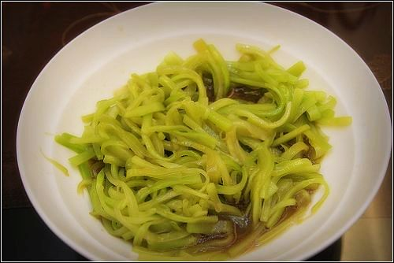
爬．山 @ Apr 26, 2009
完全变样的牛首山，被修建成度假村似的，里面随处可见种树除草修路的工人。顺着柏油路走了一个多小时上到山顶，开阔的景色和凉爽的山风才得以补偿上山的辛苦。luke也一定累坏了，说实话我并不喜欢爬山，只是顺着路走，发现是上山的方向时已经进退两难，只好硬着头皮往前行。路上遇到骑车上山的牛人，令我佩服得五体投地....如果不想爬山，进去之后的三岔路口往右走吧~
据说东郊的水榭一到周末快成帐篷党聚集地了，常见到里面挤着三五个人...不如到牛首山来扎帐篷吧，这里有的是地方，一人扎一顶帐篷都可以！
用鹅卵石拼铺的牛头，要费不少工夫吧；

U行弯道；
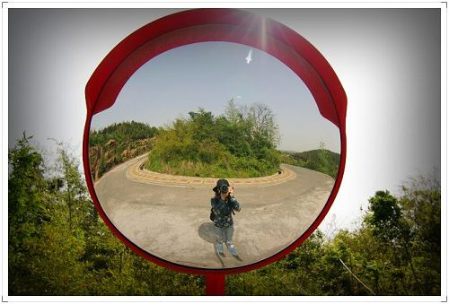
咱活得没它顽强；

好奇的Luke遇到一只壁虎；

幸好穿了衬衣，不然要晒死了。


Luke被阳光刺得眯着眼睛走路，傻样儿~

理性是魔鬼的妓女。 @ Apr 25, 2009
看完貌似大片的电影《The Devil's Whore》，有点儿虚张声势，片名只是一个噱头，截取自天主教的一句教语：理性是魔鬼的妓女。理性是纯思维、逻辑的不带任何感情，也没有信仰。真正的魔鬼将理性当做享受，即真正恐怖的不是疯狂的破坏，而是理智的破坏，那才是真正意义上的魔鬼。凡事皆有因果，你理性地去破坏当前的状态是抵抗上帝的，理性对于魔鬼来说是很卑贱的。
此片有历史背景、有不错的演员，摄影也还行，可是故事讲得太单薄。电影结尾令人心寒，我们分不清谁爱我们，而谁又在利用我们的爱？我只记住一句台词：拥有了权利和金钱你才会有自由，如果你认为还有别的自由可寻，那么去吧。
至少。 @ Apr 24, 2009
起床，洗澡。接到电话，稍有不爽。
但转念一想有什么槛儿咱过不去？不就是少得点么？我有不爽的时候别人也会有。没得到，至少肝脏健康，这一周咱没做饭没洗衣服，家里有阿姨收拾，至少今天是周末啊：）有大把的时间看电影读小说，明天起床后再炖个健康的小排汤，懒得烧咱去外面吃，轻松。没得到也没那么些家庭负担。处心积虑得到了又如何，整日里心累。咱要的是“快~~~~活~~~~”（南京话发音哦）不操心，不操心。
上苍不可能把什么好事都给你一人得，现实的运气虽与理想有差距，但诚恳地讲老天对我已经不错了，冷静冷静，让那些蹩脚扯淡的小破事见鬼去吧。
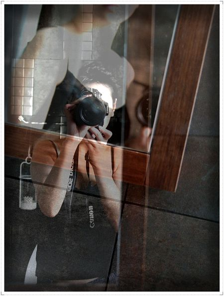
听到N个女同胞惊叹这项链，我纳闷为何将它束之高阁两年不愿戴？
也许那金色和绿色太让人不能确定...
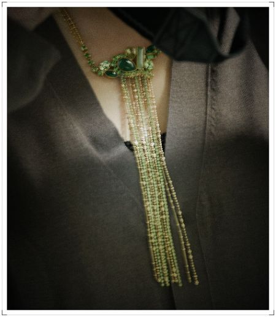


《The Visitor》 @ Apr 23, 2009
下班回家的两条路，一条被封，一条排着长长的车队...掉头往反方向开，并不知道要去哪里，只想避开堵塞的交通。开着开着心里有了目标，跑去湖南路买了久久鸭、尹氏汤包、奶茶和寿司。luke将一笼最爱的汤包在我转身的功夫吃的精光，另一笼留到明天给它解谗。外面下着雨，真希望它会在浴室里便便，但那是不可能的。拖到不能再拖下去的时候这才打着伞追着它在草地上“徘徊”。狗狗对人的依赖看看它们的眼神就知道，只要我在家，它就是个小跟屁虫。每每上班离家跟它说bye bye，它会站在门口一动不动望着我，等我一关上门，走到楼下就能在自家阳台的玻璃后面看到露着小脑袋往下张望的它....那时我会在下面朝它挥一挥手...
晚上看了部好片《The Visitor》，除了男主角Richard Jenkins在美国还算有名外（最广为人知的角色是他在HBO的剧集《六尺之下》中扮演的Nathaniel Fisher），其他三位演员都不是大牌，并且来自三个不同国家。这部电影没有明显的政治主张，仅仅是关于“人”的一部电影。故事情节自然流畅，观众没有被牵着鼻子走或被强迫产生判断的念头，剧情也没有美国式电影一贯的happy ending，确切的感受是无以言表的难过与压抑。
**年过60的经济学教授沃特不仅对事业丧失激情，在按部就班的生活中也变得消沉。妻子去世，儿子在伦敦生活。沃特平时学学钢琴来打发孤独的业余生活，也以此思念自己的妻子。可这种方式并不能舒缓他的孤独.............
**沃特遇到了来自叙利亚的年轻人塔瑞克和他的塞内加尔女友，就此改变了他苦闷的生活。他接触了非洲鼓，这个能够帮助他发泄内心情绪的途径......找到了久违的快乐，并被塔瑞克的才华和激情深深感染。
**个人很欣赏穆娜与沃特教授的角色扮演。演穆娜的女演员是来自以色列的巴勒斯坦人，现居法国。穆娜与沃特看完歌剧后在餐馆里有段对话既朴实又特别，镜头给了两个人的面部特写，值得细细品味。
**塔瑞克和他的塞内加尔女友：塔瑞克让其女友体会到生活的美好，而其女友让塔瑞克避免生活的不美好部分，一个是外向热情充满活力，一个安分守己，了解自己是谁、该干什么。
**电影不止一次展示地铁里拉二胡的中国人，与电影结尾沃特教授孤独地在地铁里敲击非洲鼓形成了情绪上的呼应。
没有任何煽情的对白，情绪随着故事发展极其自然地一点一点积聚。对于在美国移民局看押的外国人来讲并未找到一个崭新的人生，而是没有任何念想的茫然、虚空与等待.....失去了一切“人”的最基本权利。

******左左人* @ Apr 23, 2009
收到蔡蔡从深圳快递给我的泰国自助游手册，这姑娘才和朋友从苏梅岛自由行回来，据说假度的很开心。其实她完全没必要为我做这些，回想过去她洋洋洒洒写来的信透着与她年龄不相符的纯真（又一高龄的少女情怀），心里说不出的感动。再看看现在上窜下跳满脸无辜满肚子坏水的小P孩，简直无法想象他们发育的速度。
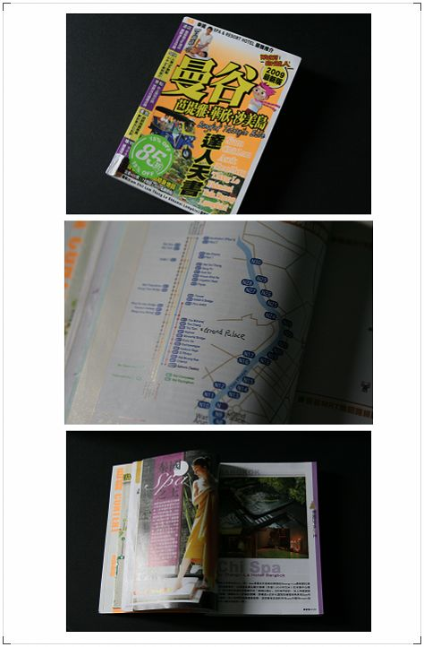
蔡蔡在苏梅岛做SPA的地方，真想一头扎进画面里去。
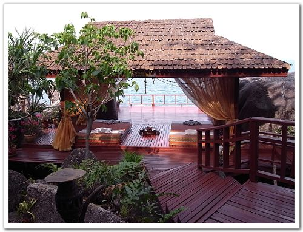
星期三，淡蓝色衬衫两侧是针织面料带收身效果的设计。5年前穿上它总感觉老气横秋，一旦自己老气横秋了之后这件衬衫却变得那么鲜嫩。换了合身牛仔裤和柔软的浅口鞋。
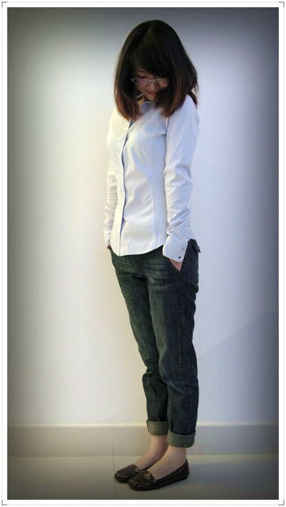

在“shanshu”上看到一个有趣的测试，无论是拇指还是手臂看，我都是左脑使用者，即“左左人”。如坊间流传的那样，左脑擅长理性思维、计算、沟通和设计，右脑则是个梦想家，更为感性和情绪化，这叫做“大脑功能一侧化”。两个半球就像夫妻，通常一起对事情发表看法，可是有时也会配合不好，任由一方主导行为，像一个伪“裂脑人 ”。
一百多年前，“杰基博士”诞生于英国作家斯蒂文森笔下，博士将药物注射进手臂，又变出一位“海德先生”，两个分身一善一恶，互相角力。这个《化身博士》的故事，显示同一个人可能拥有两种性格、两股意识，用后世心理学家创造的术语，叫“双重人格”。人格分裂症患者固然不常见，但你们看，很明显好多人伪装成那样子，白天不懂夜的黑，看起来很快活。
那么“shanshu ”那句签名“做让别人喜欢的人....”太困难了，除非人格彻底分裂，再说讨好的人里面什么鸟都有，何必那么辛苦自己？该怎么着怎么着，年年岁岁，有人猝死，让咱善良地活在自然状态下别逼自己好吧？别人喜不喜欢你，真那么重要吗？不重要，真的不重要。只要你在乎的人喜欢你就行。推荐《YES MAN》看看吧。
1.像祈祷一般，将双手交握起来... 看看你的双手
左手拇指被押在右手拇指下的---------------------->左脑使用者
右手拇指被押在左手拇指下的---------------------->右脑使用者
2.将你的双手交叉环在胸前(揽住自己~~) 再看看你的双手
右臂压住左手臂的------------------------------>左脑使用者
左手臂压住右手臂的---------------------------->右脑使用者
从1+2来看你的结果(要照1→2顺序看)
右左人：善于体贴他人的传统温婉类型
能直觉了解对方的心情，并自然和善对应的右左人。虽然无法主动积极的向前，但却会后退一步来迁就人，生性稳重且贴心，给人一股凡事都会好好照顾他人的安心感.不过一旦被拜托过一次，往后就很难再对他人说NO就是最大的缺点。不管自己有多么的痛苦也会为他人鞠躬尽瘁....这种热情堪称天下第一！
右右人：最爱自己的挑战类型
生性勇往直前，一旦认定〔就是这个！〕时就会马上采取行动！这就是好奇心旺盛最爱挑战的右右人。凭着一股气势就能够坦然挑战危险事物的鲁莽一族。但另一方面亦具有被抓住弱点时就很容易被打动的鲜细脆弱一面...。基本上，不听他人的话，会跳着听谈话的内容，也很容易就以主观意识说话。不过也因这般充满个性的缘故而备受众人喜爱，往往能成为人气者唷！
左左人：认真又冷酷的完美主义者
虽颇有女人(男人)味，但却是在这四种类型中最具有男子气概！凡事都能条理分明的理论性思考，会凭着一篇大道理迅速打败他。自尊心极高，正义感也比他人多上一倍。做为朋友是很值得信赖，但若与之为敌就会很棘手的类型。只不过，因生性认真又是完美主义者，常会让初次见面的人留下难以相处的不好印象。
左右人：喜欢照顾人，领导型
具有冷静的观察力能看透对方或现场的气氛，但亦具有能体贴入微照顾对方的一面，这就是兼具冷静与温情的左右人。因生性冷静，颇具男子气概且责任感强烈，像个大姐头般常会受到同性的爱慕。能自然聚集人群并与之俐落相处。只不过，有时也会忍不住太爱照顾他人。相当在意世人如何看待自己，总是保持警觉心。
*****************************************************
另一个有趣的测试：你是用左脑，还是右脑？我看了10秒钟这个舞女就开始逆时针转了，然后我醒醒眼睛定睛再看又变成顺时针@_@，10秒后继续逆时针......左右脑在打架吗？

如果你看见这个舞女是顺时针转，说明你用的是右脑，如果是逆时针转，用的是左脑。耶鲁大学耗时5年的研究成果，据说14%的美国人可以两个方向都能看见。
右半脑发达的人：知觉、想像力、空间感和把握全局的能力都有可能更强一些。在各种动作上相对更敏捷一些。右脑最重要的贡献是创造性思维，不拘泥于局部分析，而是统观全局，以大胆猜测跳跃式地前进达到直觉的结论。在有些人身上，直觉思维甚至变成一种先知能力，使他们能预知未来的变化，事先做出重大决策。
左脑的记忆回路是低速记忆，而右脑的是高速记忆，左脑记忆是一种“劣根记忆”，右脑记忆则让人惊叹，它有“过目不忘”的本事。
左脑发达的人：处理事情有逻辑、条理。社交场合活跃，善于判断各种关系和因果，善于统计、组织且方向感强。左脑发达善于做技术类、抽象的工作（如电脑编程）。
男性是根据右脑和左脑各自不同的分工来使用大脑的。相比之下，女性却可以同时使用左脑和右脑。男性和女性大脑的最大区别主要是大脑皮层的构造不同，女性大脑的沟通交流能力特别发达，她们细致、敏感，能够通过察言观色来了解对方的心理，直觉也很灵敏。从构造上看，女性左右脑的脑梁部分粗于男性，因此左右脑可以顺利地同时使用。多数男性方向感天生就比女性强。
海军蓝 @ Apr 22, 2009
这鞋跟有5CM吗？那么今天我有1.7M高啦~也曾不适应穿高跟鞋，即使平跟鞋也有舒适与不舒适之分，重点是买到合适的鞋子，无论高跟还是平跟。想省心的时候就穿牛仔裤，随便配件上衣就好了。
体检时医生说我左边甲状腺比右边稍微大点儿，昨天下午去医院拿了血化验和B超结果，没有任何问题，也就是说没有甲亢这一说。前几年有位同事被体检医生告知患有骨癌，吓死人家了，重新检查后压根没那么回事。我却不埋怨体检医生，至少重新细致的检查后令自己安心。看内分泌科的人还真多，那些个内分泌失调的人，表面看上去都是蛮健康的。
其实最近都不在状态，白天面如菜色，因为天天晚上喝铁观音的结果。据说应该这样喝茶，袋泡茶泡一水就可以扔了，茶叶可以喝三水。天晓得在办公室里那茶叶喝过多少水才会换？也不知道为什么晚上回家还要继续喝茶？一日之计在于晨，如果我从早晨开始萎靡不醒，那么我的头发连同眼神都是耷拉枯燥的，可是到了晚上精神却越来越好。不是不懂晚睡等于慢性自杀，可得先戒掉晚上喝茶的习惯。

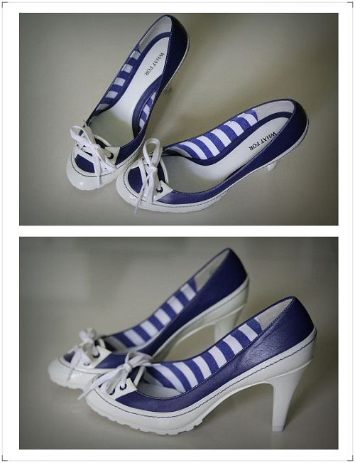
换油及STI @ Apr 22, 2009
下午和另三辆准备去西藏的EX3.0在凤台南路更换齿轮油，当然我已经决定不去了。一辆车用不完一桶油，大家分摊着用就不会浪费了。其中一辆车更换成16寸轮毂和轮胎，金色轮毂配黑色车身有点STI加强版的风范。所有车处理完天色已黑，大家决定一起吃个饭再散伙儿。一路上四辆EX排队开过去，还真酷呢，开着开着我不禁幼稚地笑起来，跟小时侯春游时的心情差不多。

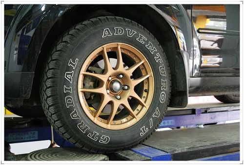
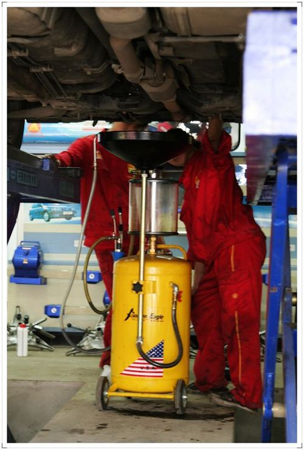

因为4S店没有STI样车展示，这辆“SUBARU 08款（10代）STI标准版”在我们晚饭后登场。它的主人是我好朋友的高中同学，与lulu熟识，还认识某班上的某某人，啊....这世界简直太小了！这车是他为自己30岁生日买的礼物，最近又看上INFINITI G37（蛮懂车的），打算把这礼物以43万出售，才跑了5000公里。
江湖上常有STI的传闻，300匹马力.....百万以内无敌，却有着朴实无华的外表。一朋友准备出手买09款 WRX STI 加强版了，那么，那么我就有机会“速度与激情”一把了！今年上海车展SUBARU出了森林人2.5XS的新车，售价在26~28万之间，之前只有2.0和2.5T，这车会对EX 2.4冲击不小。
曾试驾过新款森林人2.5T，与EX3.0比较配置没有EX丰富，音响效果不行（可以改装）。不过提速很快，过了2700转沃轮开始工作速度一下就上来了。而EX提速是一节一节的，相对比较安全，钻车流里的空档用SUBARU会很爽，森林人的空间不如EX大，比EX 3.0多10匹马力，如果你喜欢速度多于舒适的话可以选择这款车，但凡买SUBARU的人几乎都是冲着动力和四驱去的，现在买还有抽奖活动，中奖的人可以免费去北海道旅游，邬桑在当地陪你玩哦！另外，后驱车建议不要买，速度上来普通人操控有难度，尤其雨雪天气比较危险，容易出事。


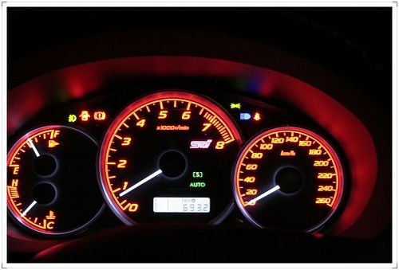
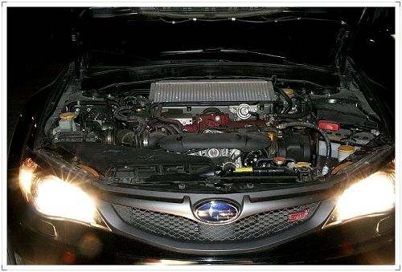


星期二 @ Apr 21, 2009
从某个周末开始我被“无所事事”纠缠着不放，对什么都提不起兴趣，醒着虚度光阴，睡着了就不想醒，臭美也索然无味地避开正脸。选碟子会先挑白痴型的打斗片看，额外购买电影单之外的碟子是需要慎重的，这使得我接连两个晚上不可避免地看到烂片.....巴西警察为了减少自己片区的犯罪率，居然将尸体搬到别人管辖地儿，然后别人又用同样的方法将尸体搬回来.....太好玩了这乱了套的社会，编剧也忒有创意了，正合乎无所事事的人的需求。当欲望逐渐减少，活着才逐渐轻松？
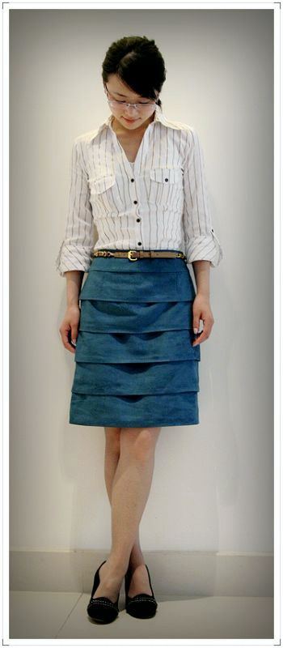
被割去的欲望 @ Apr 20, 2009
同一天，猫先生被割去睾丸，猫小姐被摘掉子宫。它们的游戏也失去了乐趣，从此只知道吃喝拉撒睡，身体会象气球一样吹起来。谁说真实不是游戏的部分？难道那份愉悦不真实？可是人类考虑的是如何避免欲望产生的结果...而已。
不得不说猫眯的表情真的赋有表现力。
奥特曼先生
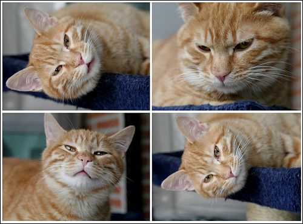
咪咪小姐

星期一．谷雨 @ Apr 20, 2009
谷雨是春天最后一个节气，果然谷雨前后雨纷纷。
早早发现自己视力下降，就这么眯着眼睛坐沙发上看电视看了好几月，实在不能忍受的周末去配了这副新眼镜。现在柜台里选择最多的又是适合小年轻的镜架，挑来选去买了这副，不用再眯着眼睛真好。阴雨天是失落的，不能去西藏了，鱼和熊掌不能兼得，去西藏就去不了别的地儿，一年就两星期带薪假，还不好意思一次休完...活着真郁闷，估计死了也郁闷，想去的地方去不成。这次机会挺难得的，全是自驾EX车，他们将18寸轮毂换成16寸的，换了全合成机油，做了好些准备，去年我为此还购进一个蜂窝式油箱和一个车载的电热杯。人生为何那么苦闷呢？
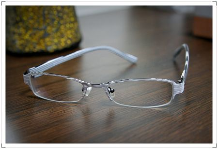

七分袖的长西装，很容易搭配。袖口有三颗扣子从未扣过，扣上太紧不方便活动。背后一道延伸至腰部的分岔，黑色锦缎包边。很喜欢里面这件sisiley黑色合身体恤，中袖，略带弹性的丝棉质感，一字大领口，有些简单的式样效果却不一般。
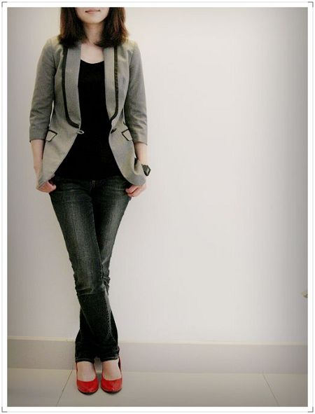
这是冬天姐姐付款送给我的鞋，不是大红色而是猩红色的。这种猩红很难得到她的理解，她是不会选这样颜色的鞋来穿的。今天第一次穿，里面加了半码鞋垫，3寸左右的深色木纹鞋跟，最最主要的是不象其他皮鞋走起路来那么响。喜欢一些边缘色，也许是因为特别吧。

宁海路．夜如织 @ Apr 17, 2009
在湖南路晚饭后来到幽静的宁海路，周围尽显喧嚣，惟独这里时间一声不吭仿佛停顿，宁静如水，夜如织...... **更多相片**

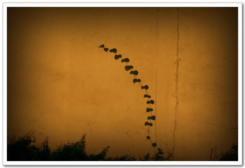

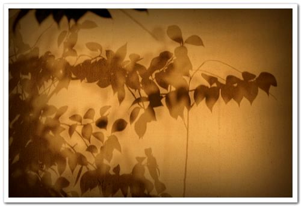

**想你,零点零一分.wma**
转眼又是周末 @ Apr 17, 2009
这一周过的so快，转眼又是周末了。
一早起来外面还挺冷的哦。
书桌上的镜子，镜子中的我，我的项链。

挤进画面浑身卷毛的Luke，摆着一副酷酷的表情，逗死了。

这双黑色翻毛高跟鞋穿了好多年，还没坏呢，喜欢这双鞋的原因是穿着舒服而且百搭。
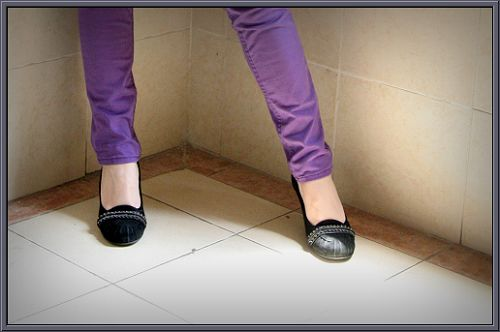
这水深火热的“情事”。 @ Apr 16, 2009
杂志的编辑约有关“情事”的稿件，专业范儿的不愿写，宁愿写别的题材，哪怕免费。太个性的人是混不下去的，得察言观色地讨好小编讨好市场。写什么不是写，只要市场需要你就造什么好了。后来想想这不等于跟我们卖东西似的没有原则，不管白猫黑猫，抓到耗子就是好猫，哪还关文艺青年什么事啊，跟作生意没什么两样。后来想想也是，当“情事”的文章在安顿之后泛滥于报纸杂志，都让人读腻了。大概“情事”也是专业范儿比较容易制造的产品，才会如此高产。
不，也许某些特别寂寥的时候出于对情感的渴望，还是有对“情事”的心理需求，那就看看不动脑子的烂漫韩剧反而来的容易？不，也许想用真实或非真实的“情事”填充杂志报纸页面，可敷衍一把年纪的人并不容易，不如让咱去看毛利的八卦来得痛快！
除非那些“情事”的字里行间充满着生僻情节与出位的生殖描写，或能满足大众猎奇心理，或能赚取一些眼球？这水深火热的“情事”面对的是怎样一种人群？记得有个大媒体的专业范儿说：“国外都是先做几年记者才能做编辑，国内完全是反过来的，刚毕业的大学生一进来先做编辑，有经验的都去干记者了。”如果小编们年纪轻轻自然会认为市场和他们同样对“情事”有需求。可是一把年纪的人觉得在杂志报纸上的“情事”跟看小报的八卦没多大区别，难道一把年纪的中年人已经沦落到非主流阅读群体了？
瞧瞧google上大把大把的情事，你会对哪些有兴趣？
**上海热线生活频道：
有车有楼该借钱给网上情人吗
央视主持董卿五段隐秘恋情
对她千依百顺 可她嫌我没钱
怀孕五个月 他竟要抛弃我
怎么？他把我大姨妈记住了啊
只是一个亲吻 我伤害到你了?
轻熟女：房子才是催情药
讨论：嫁要嫁“灰太狼”？
爱上凤凰男，分手VS继续？
提示：吵架摔什么最划算？
结婚 真的要把家底掏空？
**时尚女报的非常情事：
婚内“假父”婚外生子
替姐骗婚 情债难偿
不婚海归的桃花劫
不堪孽缘 她割伤情人“祸根”
爱上逃犯 玩不起的危险游戏
情人节有欲无情？
穿越战火的爱情
带回家=娶回家？
爱令智昏的监禁
离婚背后
唐骏：简单爱才相濡以沫
“卖妻协议” 惹两家离散
梦想的捷径是毁灭
不惑之惑 情陷天价出轨
分手后看清他的暧昧
..................................
罢了，咱都不忍心再翻下去。还是让我们看小说形式的“情事”吧，至少能体会到文学的美妙过程。完全可以把上面这些当废话看，选择买什么阅读就跟买衣服一个道理，总不能要求所有品牌只做一种或几种风格，这要看品牌想要建立怎样的消费群而定。
可耻吗？ @ Apr 16, 2009
打电话给姿儿，晚上快11点了她还在外面吃火锅，而我已经洗好澡吹干头发躺被窝里准备看书或者睡觉。
“这段时间对我那些穿衣服相片烦感吗？”我问。
姿儿：“不啊，玩呗，不过昨天那张有点象侏儒，怎么那么矮啊？”
靠，我有那么矮吗.........
总有一个声音不停地在心里对自己说：讲究吃穿是可耻的。思来想去那声音是从我小时候我父母那不厌其烦的教导声传到现在的回音。我们已经过了流行额外给完好的衣裤上打几个补丁的文革时期，能不能让人在条件允许的前提下稍微享受一下呢？这思想导致我稍微吃穿一下便开始自责，没完没了的禁锢，一边是禁锢一边是我那不屈不扰反叛的小心灵，还真闷呢~这一生究竟在什么时期可以放松心情的吃和穿呢？讲究吃穿真的那么可耻吗？


不用担心，这是一双鞋底干净的鞋。不是舍不得穿，而是穿上它无法走很远的路，光滑的鞋底上面一点耐磨防滑的纹路也没有。只能上班穿穿，逛街穿是万万不行的，除非有一天变形了也许能穿上它想走多远就走多远。很喜欢这双鞋的做工和设计，外面是真丝的花朵图案被一层黑色花朵图案的蕾丝裹着，真丝和真皮拼接的鞋垫，那块真丝上也有着红色的花朵，与脚后跟接触的是一块磨砂皮。虽是一双平底鞋，但又不象现在商店里卖的那种“平感“，好象整个人是往后仰着。这双鞋跟着我也有三年多光景了。


春乏 @ Apr 15, 2009
无所事事，懒洋洋的什么也不想做，连动脑子都觉得累。昨天晚上看了部泰国电影《拳霸2》，看着正带劲儿的时候，电影结尾以宗教精神草率的结束了，有点莫名其妙。有些怀念泰国的曼谷，等泰国政局稳定之后还想再去一次。也可以把“这次”安排在老年，离得近，体力上要求不多。虽然以前拍的数码照片并不满意，但在笔记本硬盘出问题之后也全部消失了，可惜。依稀记得拿着02年从日本买的SONY P5一个人跟着春节的团去了泰国。喜欢曼谷，相反对普吉岛却没有大多数人的热情。
跟着我的物品使用寿命都不短，还能从柜子里翻出十几年前的毛背心，追求好品质多于花里胡哨一个季节就可以抛弃的衣物。
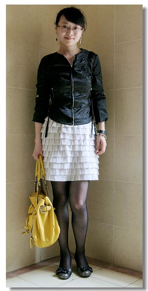
春季的下雨天 @ Apr 14, 2009
郊游完南京便下雨了，温度并没降，潮湿的空气中有着春天淡淡的暖意却仍然有着几分清凉。雨水洗刷了郁郁葱葱的植物、空气中的污浊以及建筑上的灰尘，好象点了眼药水令人眼前一亮。这时候街上的人总比平时要少，最爱这样的街道，也爱春季的下雨天。
这两天感到疲劳，从小腿肚子开始延伸到全身的拖沓。菜懒得摘，饭懒得吃，最好天天吃零食啃鸭掌吃水果喝咖啡....懒得写，懒得想，连八卦都看不懂了，完了完了，一次郊游就让我累成这样？春天来临前信誓旦旦要补回去年未完的旅行计划，这样怎么行呢？压根没走多少路呀？开车到琵琶湖，停好车下到湖边，坐在树荫下过了两三个小时而已。
中午的太阳有点烤人，不得不戴上帽子去遛狗。天气凉爽时狗狗肯定走在人前面，不时要停下来等一等主人，天一热人走得飞快，而它的步伐开始变得缓慢。

琵琶湖：这春天．灿烂 @ Apr 12, 2009
喜欢拍各种各样的人，拍他们脸上各种各样的表情，以及各种各样的体态。
下午坐在那里一动不动，守株待兔式的拍照，喜欢拍纪实多于文艺？


琵琶湖：放风筝 @ Apr 12, 2009
除了中间放“鹰”的人，其他人放飞的不是"哆啦A梦"就是"喜羊羊"，呵呵~
这时候的春天似乎还不适合放风筝，风向飘忽不定，大人们放的风筝多半没一会儿就旋转着栽下地来。哆啦A梦在天空中的笑脸象极了Luke的笑！


琵琶湖：我们俩 @ Apr 12, 2009
Luke笑的多开心啊，不过要是别的狗狗靠近它，它就会呼人家，特别小家子气。
还是经常带出来见见世面的好。
这是一只会交流的狗，瞧它头的方向和我还挺配合的。
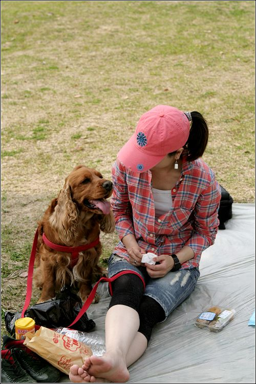
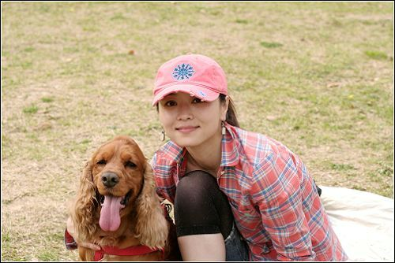
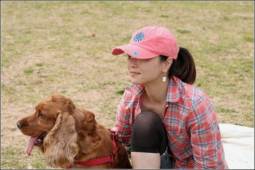
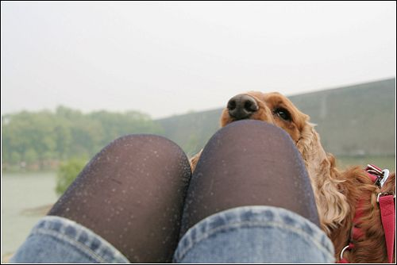
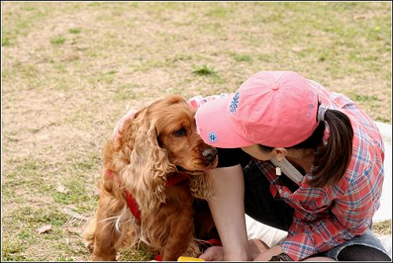
琵琶湖：浓墨重彩的烂漫 @ Apr 12, 2009
在琵琶湖边坐下，拍照变成守株待兔，两个小时内来回10对新人，不是拍婚纱照就是婚礼当天拍外景的。
记得曾经看到一篇文章，大概意思可以用电影版《欲望都市》里Carrie的婚礼说明，Carrie之前筹划了一个200宾客的庞大婚礼，吓跑了Mr.Big.............最终以只有他们两人参与的婚礼结束，文章最后一句“爱情何需众人见证”。非常私人化的关系越粉饰越具有一定虚假性？以及今天这种浓墨重彩的烂漫，所谓内里无所附着才需要依靠一些外在的支撑。大家的婚礼一样，连写真上新娘被柔化后的脸都是一样的。当然生活永远需要形式这个东西，可是能不能让我们多点属于自己的特别和新意？
推荐一个fotoblog“Something in Blue”，这是在纽约专门帮新人拍摄结婚照片的网站，上面展示的相片还能让人体会到一些真实的烂漫吧？
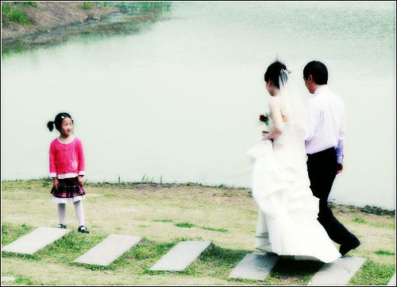
琵琶湖：一只梨子引发的... @ Apr 12, 2009
这只锈了的梨子就要被吃掉，因为主人坐在斜坡上，而它不慎滚了二十几米落到湖水里；
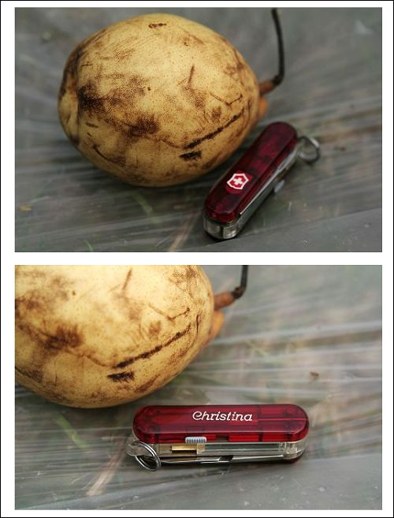
三个小孩发现湖边的梨子之后将它捞上岸，异常兴奋；

其中一个孩子提议：用这只梨来砸死刚才捞上岸的蚂蝗。
于是他们又兴奋地飞奔过去。

我有一片“明．媚” @ Apr 10, 2009
一朵赋有表情的花朵，有谁知道她的花名吗？
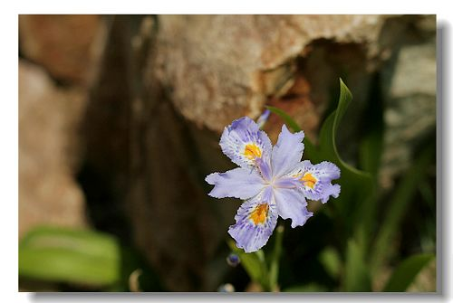
迎光的花瓣通体透明得动人。

四朵金花是一家。

最喜欢这张，象一块东方风格的花布，可以用它来做春天的衣裳。

阳光在细碎的叶片里荡漾。
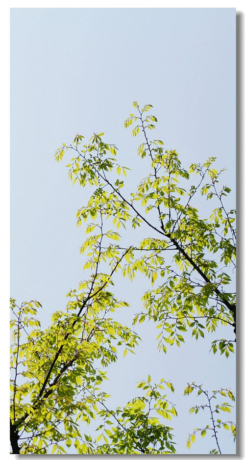
无论给它一片沃土还是一节树桩，它都会迎着春风吐出新绿。

疯长的草与吹来的风。

缩小尺寸后损失了动人的细节。

竹林里有一只好奇的狗....

Enter with happy heart.

周末打算穿得随意些，晚上下班去浅尝一口想念的咖啡。

虎子的专场演出 @ Apr 10, 2009
facebook上收到虎子发来的演出邀请，4月17日在北京的愚公移山开始PET CONSPIRACY乐队的第一个专场演出，从之前的4个人发展成现在的5个成员。这里介绍一下，北京的朋友有兴趣的话可以去看看，我在考虑中......
我发短信：虎子，那副宣传画里哪个是你的屁屁啊？
虎子：哈，哪个也不是。
真扫兴。

成立于2008年的宠物同谋{PET CONSPIRACY}终于迎来了自己的第一个专场，这只DISCO PUNK乐队，在成立不到一年的时间里就完成了欧洲巡演及一张EP的发行，PETS有太多的野心，他们的标准是纽约的LCD SOUND SYSTERM,是多伦多的Crystal castle,

是英国的simian mobile disco。。。。。。，，如果你看过他们的现场你就会明白，这绝对不是给摇滚呆瓜和POGO死党准备的礼物，如果你有一件足够时髦的衣服，和一套蹩脚的DISCO舞步，当PET 的偷心小曲从你耳边划过时，身体这时候比心灵更重要！！！这次愚公移山的专场PET还请到中国第一只电子乐队超级市场为他们做开场嘉宾，这次专场PET 将不惜成本的彻底改造音响和舞台灯光设计，因为对PET CONSPRIACY来说音乐就是不惜成本的享受，你准备好你的身体了吗？4月17号来北京的愚公移山一起跳舞!！！！
**2008年：和虎子看望分别15年的小朋友们，应该说和虎子一辈儿的旧友，和我差不多大的分散在各地了。那次虎子刚从欧洲演出回国，穿着在国外跳蚤市场买的70年代的运动衣和短裤，很范儿的在我镜头前做体操，特可爱。
**2005年：这是我们分别十几年后第二次见面，特别亲的感觉，象是家里人。
**2006年：那时虎子和小坷合作“触听”，在上海的朱岐瞻美术馆做小型演出。

Formed in 2008, Pet Conspiracy has already done the holy grail of touring for Beijing bands, playing to packed-out audiences in Berlin, Cologne, Budapest and Barcelona at world famous venues. But at home, they’ve been a well kept secret. Although their name is already getting tremendous buzz among Beijing’s music circles, few have yet seen one of their rare performances. Now Pet Conspiracy will bring their uniquely eclectic blend of electro back to Beijing in their first "Coming Out" concert at Yugongyishan. Their performance take influence from such divergent bands as Crystal Castles, Blondie, 30’s era German cabaret, and no holds bar scream along punk rock. Packed full of infectious hooks, their music is fashionably absurd and very danceable. Supported by one of China’s electronica institutions, Supermarket, this show promises to be a place for Beijingers to put on their hipster duds and bounce like a caffeinated bunny. In other words, a good time.
死电脑里的制度 @ Apr 09, 2009
每天早晨冲上楼在打卡机上按下自己的指纹，就少一次被扣50元的风险，一个不多十个许多。俺们公司管理越来越先进的是还制作了程序，出差请假以及工作衔接交流都在这个程序上执行，进行到哪一个阶段上面都有显示。当考勤第一个月体现在该程序上时，问题就暴露了。某同事面红耳赤地低声跟总经理说不是钱的问题，为什么某某与某某壮观的缺打记录一笔勾销，而他仅三次缺打就被扣罚，这不是不鼓励员工加班么。哎呀~我也曾经这么嫩过，现在不会提问题了。
制度大多数时候不对事，而正义永远在领导层，那么当制度在死电脑上留下走过的痕迹时，把能做的工作尽量在制度执行前做好，了事。
青年们又春游啦~ @ Apr 09, 2009
5.4就快到了，28岁以下团员们明天去什么山春游两天，只知道在安徽黄山边上，大好春光就让我们这些中老年人继续上班吧。
党员活动就没那么有乐趣了，一般都是去什么革命根据地之类的地方，当天来回的多。其中中老年和领导同志颇多，混在党员队伍中行走总要收敛点好，没那么多自由的氛围让你个性化出游。
今天催着交党员“学习科学发展观”民意测试卷，收我卷子的哥们儿说：“不是我说你，你也忒认真回答了吧....”我翻了下他手上其他人的答卷，基本简答题下面的空白处就三两个字，大伙儿都挺不给领导面子的。如今处处都乐意上演皇帝的新衣，相互宠着、彼此叫好、睁着眼睛说N遍好听的废话，跟百无聊赖听一场空洞的演说没什么区别。
无论工作还是生活总要有点professional精神吧，你要想干就干好，你要想过就好好过。允许存在理解上的差异，比如徐州火车站的警察叔叔任意翻查旅客手机和笔记本电脑，查到一个淫秽文件罚200元。然而政府文件白纸黑字写着“传播”淫秽信息的要被处罚....理解不正确导致警察叔叔随意查看他人手机和电脑的行为损坏了政府在民众心目中的形象，但我们通过这个事件的报导更加深刻了解到政府的这项规定，也不仿碍这个规定存在的意义。
这个周末也让自己春游一把，活动一下，管它下雨不下雨。
将街拍进行到底 @ Apr 09, 2009
这么热的天，还需要废话什么？中午要打空调才能钻进车厢了，还是将街拍进行到底让人玩的爽快。


The miniature earth. @ Apr 08, 2009
The idea of reducing the world’s population to a community of only 100 people is very useful and important. It makes us easily understand the differences in the world.
There are many types of reports that use the Earth’s population reduced to 100 people, especially in the Internet. Ideas like this should be more often shared, especially nowadays when the world seems to be in need of dialogue and understanding among different cultures, in a way that it has never been before.
click here:The miniature earth
Thanks to Min.

体检日 @ Apr 08, 2009
体检穿什么衣服方便呢？
Paul smith小夹克+Esprit长袖体恤+Chevignon牛仔裤。
既然不用上班就睡个小懒觉吧，十点多到医院，只有两三个门口排队，其他项目畅通无阻，快滴来~有个同事说她8点就到了，查到我去还没查完，还是晚点去效率高。抽血的阿姨戴着口罩和帽子，脸上松软而苍白的皮肤被挤出更多的皱纹，即使大部分面孔被遮住还是能察觉出满心的不欢喜，她冰凉的手指触碰到我的皮肤上，指甲缝里藏着黑黑的污垢，胸牌上有张着军装的正面免冠照，多好的职业啊，多好的待遇啊，多好的铁饭碗啊....还有什么不高兴呢？这次体检我居然矮了一厘米变164CM了？48.2KGS的体重也有点不靠谱，我最关心的项目要等报告。公司提供这种规律性的集体福利挺不错的，早发现问题早治疗。下午便有人在办公室里交流各自的体检状况了，好象看完电影讨论电影情节一样热闹。
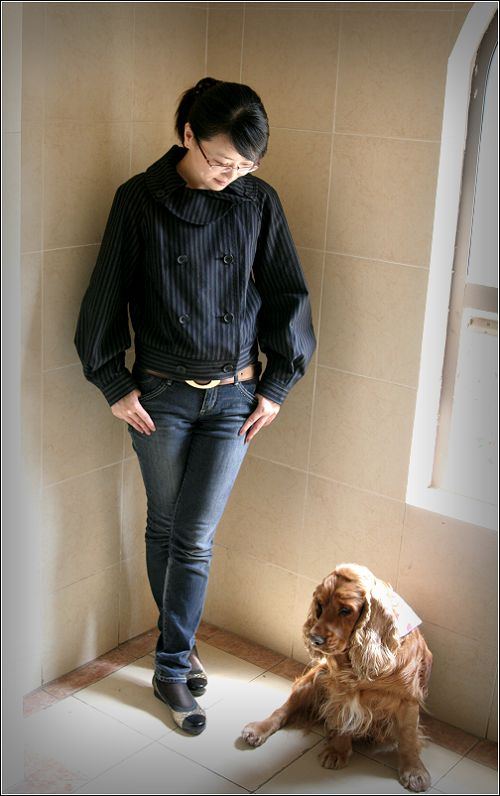

我爱美食 @ Apr 07, 2009
在超市买了很久的皮肚，终于鼓起勇气晚上烧了它。
之前胆怯是不知道怎么清洗，问了别人知道要泡一下，特地买了食用碱，用碱水洗泡了一夜的皮肚，为了将上面浓厚的油洗掉。切成片和自己烧的鹌鹑蛋、青菜、西红柿、木耳以及魔芋豆腐一起烧。第一次吃魔芋豆腐，口感不象豆腐，而象果冻，奇怪极了，叫魔芋果冻豆腐更形象些吧。这盆菜的味道和饭店的有得一拼，为保持青菜本来的味道，先炒好放置一边，到最后倒进去很快就可以起锅了。
豆豉、鸡胸脯肉和青椒，鸡胸脯肉事先用各种调味品腌制十几分钟，炒的过程中切记不要加水哦。

For Maggie @ Apr 07, 2009
Maggie说：“推荐一下你看过的10本书给我，我也给你10本书名。”
我说：“好的，晚上回家做功课然后给你一个list。”
写下来发现里面有7本是好多年前看的书，居然还有90年代初的，比如《我在寻找那颗心》还记得作者是江宛柳，当时看完站在床上拿着毛巾擦眼泪，哭得泣不成声，肩膀一耸一耸的甚是伤心，现在想来不过是一部欲罢不能的爱情故事而已。比如《身体上的国境线》最最推崇的是作者贺奕字词搭配很....怎么形容呢，总之很符合我内心的渴求，又是标线又是在书里的文字边写感受，认真劲儿让现在的自己唏嘘不已。并且最最神奇的是居然作者通过茶联系上了我，给我邮寄了这本小说，当时在南京的书店根本买不到，而我第一次看到它是在《收获》杂志上，继续有意思的是通过贺奕认识了英国的少爷，不晓得一位女士为啥起“少爷”的名儿，挺幽默的主儿，每每看她的Blog轻松得来.....印象深刻的还有余秋雨的《苏东坡突围》，那应算是《文化苦旅》的其中一篇，读着很带劲儿。我们遇到一个人时的气场有合与不合，看书估计也差不多，有的一下子就被吸引进去了，有的读起来就是苦涩无味。我能看书哭成那个死样，小时侯应该培养我往表演方面发展，可惜了。
二十岁左右象一块海绵般的读书，对各色各味的水来者不拒，就是那股子劲儿，在10年间丢失了。这个List令自己汗颜，近10年读的书真少，果真是看不下文字只挑画画看了省事的阶段。好在我又可以静下心来读啊读啊，甭管多复杂，就让暴风雨来得更猛烈些吧~按照目前四周三本书的进度，努力点三个月可以列出10本书名，当然还得读到喜欢的书才能推荐，Maggie你说是吧！
真高兴周围知性的女性朋友越来越多，可亲的是澳洲的Helen要将她家小孩子的衣服送给我呢，受宠若惊滴~最近认识一个写童话小说中文系毕业的女孩子，陈丹燕最初也是写童话，后来写成人文学，期待有一天能看到这个女孩子的成人文学作品.....咱圈子里也有文人墨客啦~今天广播新闻里听到一句“压力使人年轻”，啊哦？！哪怕为了年轻，给自己多些压力看书吧！
我的List：
1、《我在寻找那颗心》
2、《身体上的国境线》
3、《伪生活》
4、《活着》
5、《血色黄昏》
6、《慢船去中国.范妮》
7、《慢船去中国.简妮》
8、《追风筝的人》
9、《文化苦旅》
10、《千年一叹》
Maggie的List：
1、《河童-窥视日本》
2、《河童-窥视印度》
3、《河童-杂记》
4、《凌叔华的文与画》
5、《丹山赤水柿林村》
6、《护生画集》
7、《胡茵梦－生命里的不可思议》
8、《王小慧－我的视觉日记》
9、《书店风景》
10、《品园》
杂七杂八 @ Apr 07, 2009
这是“蒿茶”，南京特产“芦蒿”，知道吧？就是芦蒿制作成的泡水喝的茶叶。可惜这是最后一点蒿茶。节前去音像店买DVD，盯着店家杯子里碧绿的茶水看了好一会儿，店家是个慈眉善目的女人，比我大一岁，看我研究她的茶水，就送了我一袋尝鲜。
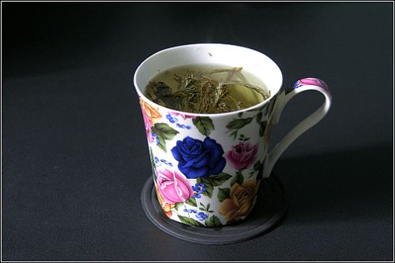
前后买了《嫌疑人X的献身》的书和DVD。按照经常把困难放在最后解决的习惯，当然先看的是DVD了。里面的配乐很好听，日剧里的女主角长着一根奇怪的鼻梁，做作的大学教授以及执着闷骚的高中数学老师....按照星座来看水瓶最最具有好奇心，有探宝寻奇的嗜好，所以类似推理剧情的电影最适合水瓶座人观看。
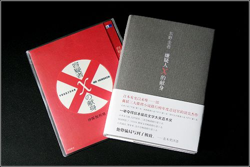
犹豫是否要持续“街拍”秀，还是随便点儿好，想拍就拍，没心情就不拍好了。当今天得知唱《叶子》的台湾歌手34岁阿桑患乳腺癌去世的新闻，越发坚定每一天都要尽力在快乐中度过的愿望。
喜欢这只包包柔软的质感，它其实不是淡黄色而是明亮的鹅黄色，与春日的氛围很搭。上班用可惜了，很快就会脏的。


假期．宅女 @ Apr 06, 2009
本想和家人去外面感受一下春天热烈的气息，可园子里的绿化和公园有得一拼，于是这座园子就是我们天天散步晒太阳拍照的乐园了，有时我一个人带着LUKE散步，感觉整座园子里的花只为我盛开，有点儿美妙。
小区里的节日气氛正浓，比如某个大阳台上四人围坐一小桌子搓麻将，比如三五成群观赏盛开的花朵冒绿的嫩芽，比如经过阴雨天的汽车都在节日里闪烁出漂亮的光泽，比如闻着被风吹进鼻孔的邻家菜香我更加激情四射的尝试各种烹饪.....阳光暖得人安逸，午后坐在摇椅上读书，是假期最最惬意的部分。四周后又结束一本小说，第三本欣然上场，就这样让我在春光里摇曳到夏天来临吧~
三十岁前只要放假有空就想着往外奔，三十后死命守在家里任凭谁约了FB都不去，这是心理成熟的征象吗？让我更感充实与宁静，收获多多。这就要收拾心情准备上班了。

小胖 @ Apr 05, 2009
带Luke在宠物店理了发，剃了些耳朵上的毛，剪指甲修腿毛，连面孔上多余的毛也被整理掉，之后发现一颗小脑袋下拖着一个面包似的身体，他发胖了呀。怀疑宠物店是否知道如何给英卡美容？
天气骤然晴了，这次....不会再忽悠人类了吧？除了冬天幸运活下来的花草，还需要添置一些装扮这美丽的春天。

If it’s too loud,you’re too old! @ Apr 01, 2009
上个世纪的中国摇滚受GNRS（GUNS N' ROSES）的影响很深，GNRS被公认为最重要的摇滚乐队之一，有人说Axl Rose过了17年功成名就、衣食无忧的生活，从壮年变成了老年，头发开始白了，皱纹开始多了，体力开始衰弱了。然后，他突然宣布要从头再来，依然像年轻时那样，在舞台上大吼大跳，更难得的是，他的作品依然保持激进，散发着愤怒和不妥协。去年11月GNRS的新专辑Chinese Democracy发行以来在中国遭冷遇。
摇滚总是与与性、毒品和政治有关，西方人试图通过这些小事情来试探官方的反应，如果反应激烈，比如，如果秦刚老师说“伤害了中国人民的感情，讨厌西方摇滚歌星干涉中国内政或者中国人民对此表示强烈抗议”之类的话，那西方媒体就有文章可做了。但是秦刚老师说：“据我了解，很多人不喜欢这类音乐，因为它太嘈杂，噪音太大。我想你应该是一个成熟的成年人了吧？”对啊，俺们中国小P孩都喜欢李宇春，年轻人喜欢周杰伦，中老年人都喜欢辣妹子辣啊~
一些中国的艺术家不愿意被冠以民主宣传人的称号，拒绝高昂的报酬为专辑造势。“我打小就听枪花的音乐”一位视觉艺术家说。他非常高兴当枪花要求买那张将天安门画成游乐园，毛泽东旁边是过山车的画。接着他看过专辑的标题和歌词之后，征询了律师和合伙人的意见，最终决定拒绝乐队一万八千美元的出价。“作为中国的艺术家我们必须把承担政治风险考虑进去”北京著名吉他手之一的陈磊说。
虽然现在中国有关当局已经放宽对有争议歌手来华表演的政策，但始终对硬摇滚存有偏见。06年，滚石乐队第一次来华演出，被迫禁唱有争议的歌曲"Brown Sugar" 。有消息称：GN'R的宣传方已经取消了乐队今年在中国的两场演出。文化部已经禁止引进违反十项原则的音乐，这包括损害社会公德的音乐，可实际上，许多进入中国的音乐要么是盗版，要么通过互联网传播。吉他手陈先生说“Chinese Democracy”这个新专辑的标题证明他们对中国还不了解，这只是煽动舆论罢了。
我想你应该是一个成熟的成年人了吧？ 已经成为了文艺青年的口头禅了。英国重金属杂志《Kerrang!》出过一本重金属百科，封面上有一句话：“If it’s too loud,you’re too old!”如果你觉得它太吵，就说明你太老！
**Chinese Democracy.mp3
**歌词及翻译
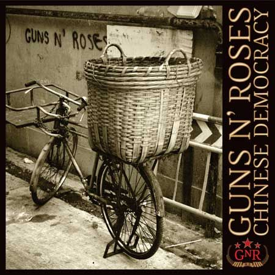
金陵花事 @ Apr 01, 2009
Sherry上周末外出拍海棠和樱花，发来几张给我看。女性拍的PP和男性还是有区别的，非常甜美素雅，为她突飞猛进的摄影惊喜。
很喜欢她在莫愁湖公园拍的第一张“水边的垂丝海棠”，似清新水墨画，好象一碰触那些色彩就会融化了，春天在心里轻轻地挠着痒痒，怎能让人不动心？据说海棠花是一棵一棵的树哦，我以为是种在花盆里一小棵的呢。Sherry准备把南京一年四季的花卉都记录下来，做一个“金陵花事”的集锦。
这些被拍烂了的景色，仍然有动人之处，关键还是相机后面的眼睛。
Sony @200
Shot by Sherry


樱花就没那么好拍了，拍一朵海棠花还可以看细节，一朵樱花就不好看了。
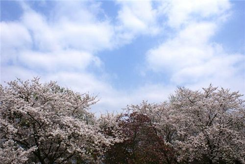
*彩云之南*
Sherry拍摄于2009年春节


还是一点没变，和她拍的PP一样甜美。
Sherry于2008.11.

我有两个笑靥如花的女友，为她们拍照总是赏心悦目。
*** 2005年5月拍摄于南京

*** 2006年冬天拍摄于南京东郊

娱．人．节 @ Apr 01, 2009
狗狗刚睡醒的样子，神奇的是酣睡中的狗狗能立刻醒来跟着主人走。
人就不行，刚睡醒怎么都要酝酿一下再翻身下床吧~

越来越有男人味儿了。
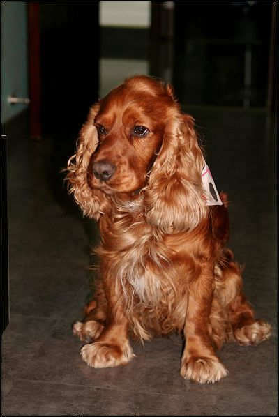
我要吃肉，我要吃肉，我要吃肉.......
既然是娱人节，就不PS掉后面的芭蕉叶了，满脸倦容，头发也没梳就起来娱乐了~

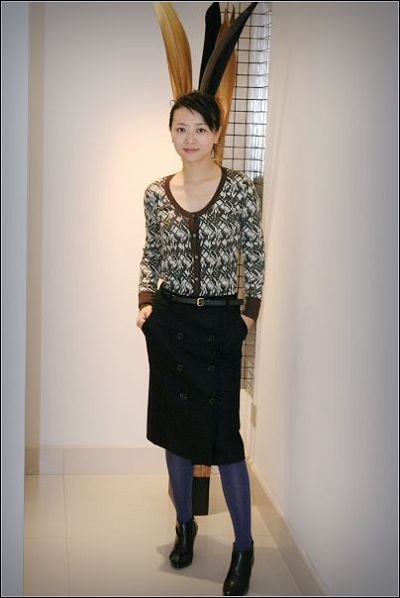

现在穿这么高的跟已经是小case啦~
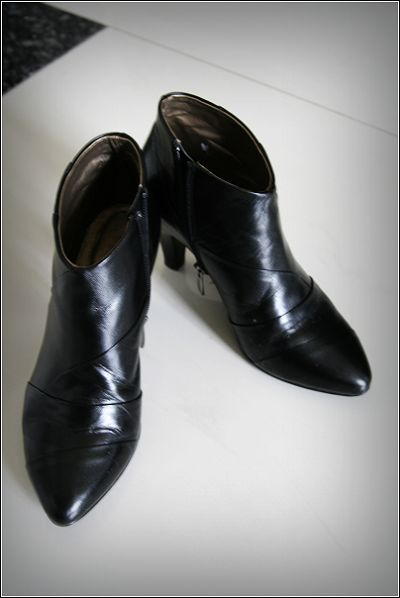